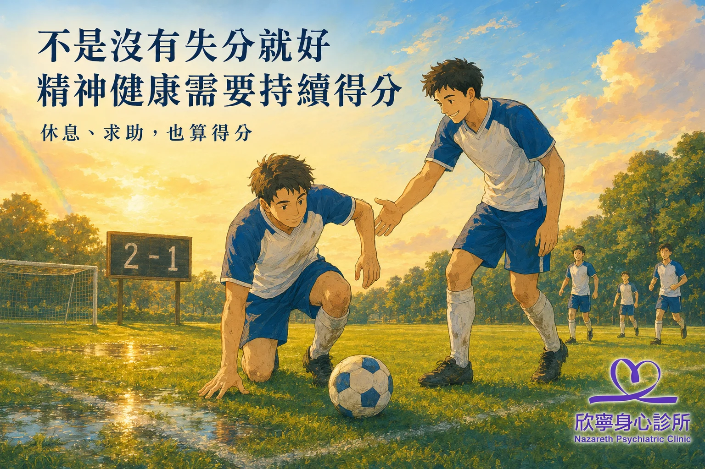

精神健康衛教
不是沒有失分就好：精神健康需要持續得分
從英格蘭的守成到阿根廷的逆轉：今年世足賽告訴我們的事
精神健康不只是避免崩潰、失眠或情緒失控，也需要持續累積能夠支持自己的行動。 好好吃一餐、走一小段路，或告訴可信任的人「我最近有點累」，都可能是重要的一分。 偶爾退步不等於失敗；休息、求助與願意被接住，也算得分。
一場逆轉，提醒我們比賽還沒結束
當地時間2026年7月15日，英格蘭與阿根廷在世界盃準決賽交手。 英格蘭下半場先取得領先，之後試圖守住優勢；阿根廷仍持續尋找機會， 在比賽末段追平，並於傷停補時完成逆轉，最後以二比一晉級決賽。 這場賽事的結果可見於 FIFA官方紀錄。
領先不代表比賽已經結束，暫時落後，也不表示沒有改變的可能。 不過，人生並不是每場都必須逆轉。這場球帶來的提醒，不是要求自己永遠奮力進攻， 而是不要只用「有沒有失分」評價自己的狀態。
精神健康，不只是看起來沒有出事
我們有時會把照顧自己想成睡得好、情緒穩定、不要想太多，也盡量不讓別人擔心。 這些期待可能出自關心，卻也容易讓人覺得，只要沒有明顯出問題，就算維持得不錯。
然而，精神健康不只是避免失控，也包括慢慢增加生活中的支持。 研究顯示，適合個人狀況的身體活動，可能有助於改善憂鬱、焦慮與心理壓力； 行為活化治療也強調，從小而有意義的行動開始，可以逐步減少退縮與逃避。 效果仍會因人而異，也不能取代必要的專業治療。 [1] [2]
一次只拿一分，持續一週看看
可以從下列行動選擇一項，不必全部做到：
- 記得補充水分。
- 依自己的體力，到戶外走五至十分鐘。
- 睡前提早十分鐘放下手機。
- 傳一則訊息給值得信任的人。
- 暫緩一件已經超出負荷的事情。
先嘗試一週。完成時簡單打勾；沒有完成時，只需要看看當天遇到了什麼，不必扣分。
偶爾失分，不代表回到原點
熬夜、情緒失控，或再次回到不理想的習慣，都不表示先前的努力白費了。 與其立刻責備自己，可以先問：「最近是不是太累了？我承擔的事情是否已經太多？」
研究顯示，練習以較溫和的態度回應自己，可能減少自責、憂鬱、焦慮與壓力， 但這並不是要求自己凡事想開。 [3] 心理困擾也可能與身體疾病、長期壓力、創傷、人際關係或生活環境有關， 不是只要積極一點就一定能改變。
什麼時候需要尋求專業協助？
如果情緒低落、焦慮、失眠或失去興趣持續加重，已明顯影響工作、課業、人際關係 或日常照顧，建議尋求身心科、精神科或心理專業人員協助。 正在接受治療者，不宜因為一時好轉或挫折自行停藥或調整劑量。
留在場上，也是一種得分
你不必每天都有進步，也不需要把自我照顧變成另一張成績單。 有力氣時向前走一點，疲累時允許自己休息；難以承受時， 願意說出「我需要有人陪我」，同樣是重要的一分。
參考資料
- Singh B, Olds T, Curtis R, Dumuid D, Virgara R, Watson A, et al. Effectiveness of physical activity interventions for improving depression, anxiety and distress: an overview of systematic reviews. Br J Sports Med. 2023;57(18):1203-1209. doi: 10.1136/bjsports-2022-106195.
- Cuijpers P, Karyotaki E, Harrer M, Stikkelbroek Y. Individual behavioral activation in the treatment of depression: a meta-analysis. Psychother Res. 2023;33(7):886-897. doi: 10.1080/10503307.2023.2197630.
- Han A, Kim TH. Effects of self-compassion interventions on reducing depressive symptoms, anxiety, and stress: a meta-analysis. Mindfulness (N Y). 2023;14(7):1553-1581. doi: 10.1007/s12671-023-02148-x.